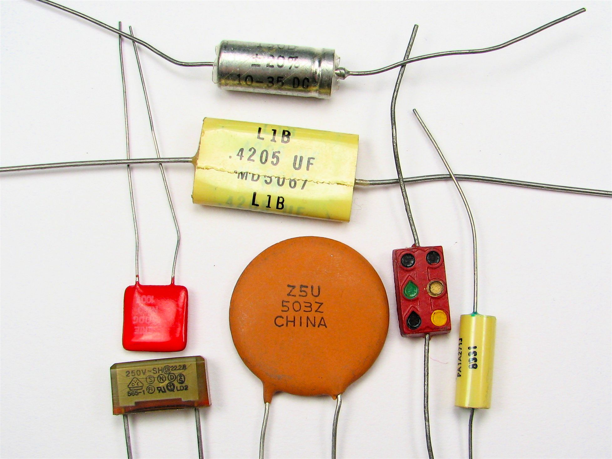
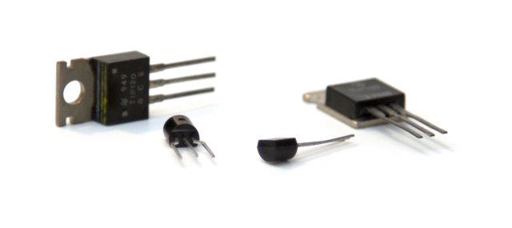
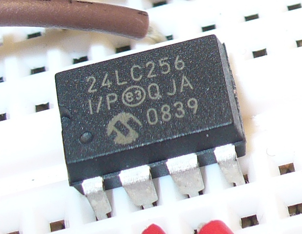
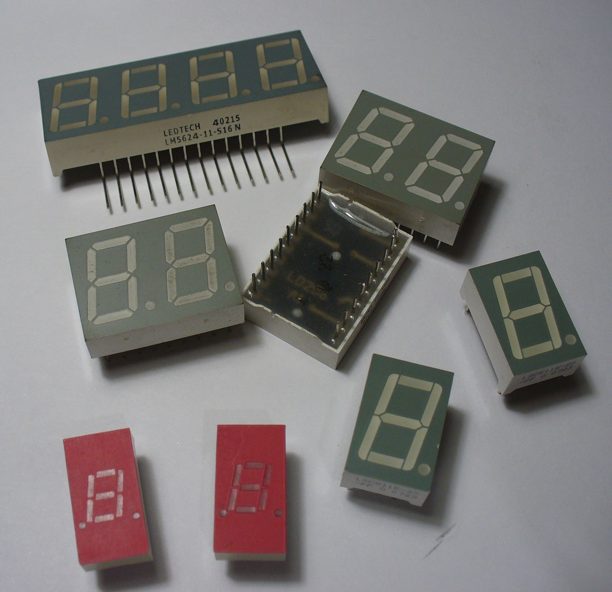

Refactoring to Symfony Components
...and their friends
Michael Peacock
@michaelpeacock
- PHP Developer / Consultant
- Technical author
- Occasional conference speaker
The components
http://symfony.com/components
Why use components
- Solve common web application problems
- Incredibly well documented
- (relatively) Standalone: use them how you like
- Ideal for refactoring
Installation
Composer: the knight in shining armour
Download it
curl -s https://getcomposer.org/installer | phpCreate a composer.json file
{
"require": {
"symfony/the-project-name": "dev-master",
}
}Run composer
php composer.phar installTheir friends
What's in store
- Autoloading classes with ClassLoader
- Routing requests with Routing
- Listening for events with the EventDispatcher
- Parsing YAML files with the YAML component
- HTTP Requests and responses with HTTPFoundation
- Injecting dependencies with Pimple
- Templates with Twig
Our refactoring tale
Speed up development & modernise legacy codebase
Legacy refactoring journey
- Messy structure, some procedural code: ClassLoader
- Globals, singletons and crazy objects: Pimple
- Scattered routing logic, long if/else conditions: Routing
- Hardcoded configurations: YAML
- Duplicated logic: EventDispatcher
- PHP & HTML mixed together: Twig
- Duplicate form logic, spagetti code: Validator
- Other improvements: Mailer, HTTPFoundation, Translation & Validator
Messy structure & procedural code
Class Loader
Laying the foundations
- Controllers
- PSR-0
- Namespace the code
- Restructure into a better directory heirarchy
- Component based structure for our own code too
Usage
$namespaces = [
'VendorName\\Namespace' => __DIR__ .'/',
'VendorName\\AnotherNamespace' => __DIR__ .'/'
];$loader = new \Symfony\Component\ClassLoader\UniversalClassLoader();
$loader->register();
$loader->registerNamespaces($namespaces);Caching
Support for APC available, just needs to be enabled; Not necessary if using PHP 5.5
Globals, singletons and crazy objects
Pimple
Pimple is a dependency injection container which lets us easily manage and inject dependencies into projects. We put the dependencies into a container, and then we inject this container into our code which uses it.
Refactoring to use a container
<?php
class SomeModel
{
public function __construct()
{
$sql = "";
$query = Database::query($sql);
}
}before<?php
class SomeModel
{
public function __construct($container=array())
{
// TODO: further refactor once d.i.c. in place
$sql = "";
$query = Database::query($sql);
}
}afterLazy loading
By utilising closures, code isn't run until it is first requested / called; i.e. database connection is established only when you first try and use the connection
$container['db'] = function($c) {
return new \PDO("...", $c['db_user'], $c['db_pwd']);
};Further refactoring
<?php
class SomeModel
{
public function __construct($container=array())
{
$sql = "";
$query = $container['db']->query($sql);
}
}Creating your own container
Particularly useful for re-use and different use-cases (cli vs web)
<?php
namespace Project\Framework\Container;
class MyContainer extends \Pimple
{
public function __construct(array $values = array())
{
parent::__construct($values);
// add things to the container here
}
}Controller refactoring (before)
<?php
class SomeController
{
// ...
public function someAction()
{
$model = new SomeModel($this->container);
}
}
Reducing new...containers within containers
<?php
namespace Faceifi\Framework\Container;
class DataAccessObjects extends \Pimple
{
public function __construct(array $values = array())
{
parent::__construct($values);
$this['user'] = $this->share(function($c) {
return new UserDao($c['container']);
});
}
}Controller refactoring (after)
<?php
class SomeController
{
// ...
public function someAction()
{
$model = $this->container['factories']['some_model']->newModel();
}
}Hardcoded configurations
YAML

A YAML file
db_mysql:
host: 'localhost'
user: 'root'
pass: ''
name: 'db'
port: 3306
auto_patch: true
general:
production: false
skin: 'release'
site_url: 'http://localhost:4567/'Parsing a YAML file
$yaml = new Symfony\Component\Yaml\Parser();
$parsed_settings = $yaml->parse(file_get_contents(__DIR__.'/config.yml'));Caching
:-(
Scattered routing logic, long if/else conditions
Routing
Refactoring foundations
Mostly taken care of when we ensured all controllers were objects and that the new structure followed PSR-0. Controllers refactored like so:
public function __construct($container)
{
$this->container = $container;
}
public function someRoute($date, $some_id) {} Setting it up
Alias some of the namespaces
use Symfony\Component\Config\FileLocator;
use Symfony\Component\Routing\RequestContext;
use Symfony\Component\Routing;
Prepare dependencies
$locator = new FileLocator([FRAMEWORK_PATH]);
$request = (isset($_SERVER['REQUEST_URI']))? $_SERVER['REQUEST_URI']:'';
$context = new RequestContext($request, $_SERVER['REQUEST_METHOD']);
Construct
$router = new Routing\Router(new YamlFileLoader($locator), 'routes.yml', [], $context);Routes file
index:
pattern: /
defaults: { class: 'Project\Static\Controller', method: 'homePage' }
requirements:
_method: GETRouting
try {
$url = (isset($_SERVER['REQUEST_URI'])) ? $_SERVER['REQUEST_URI'] : '';
// get rid of the trailing slash
$url = (strlen($requestURL) > 1) ? rtrim($requestURL, '/') : $url;
$route = $router->match($url);
$controller = new $route['class']($container);
$action = $controller->$route['method']();
}
catch (Routing\Exception\ResourceNotFoundException $e) {
// todo: 404
}Route variables
comment_story_add:
pattern: /news/{category}/{date}/{article}
defaults: { class: 'Comments\Controller::addComment' }
requirements:
date: "[0-9]{2}-[0-9]{2}-[0-9]{4}"
_method: POST$route = $router->match($url);
$controller = new $route['class']($container);
$method = $route['method'];
unset($route['name'], $route['class'], $route['method']);
call_user_func_array([$controller, $method], $route);A step further: model hydration
- Iterate through route variables
- Map to factories, e.g. user_id => user_factory->createFromId
- Add resulting map (or original value if no mapping) to a new array
Authentication control
account:
pattern: /account
defaults: { class: 'Project\Account\Controller', method: 'manage', logged_in: true }
requirements:
_method: GETif (isset($route['logged_in'])) {
if (is_null($container['user'])) {
// User is trying to access logged in only content - redirect to login and store redirect
}
}Route caching
$router = new Routing\Router(new YamlFileLoader($locator), 'routes.yml', ['cache_dir' => '/var/www/cache/'], $context);UTM data, etc
$url = preg_replace('/&?utm_(.*?)\=[^&]+/', '', $url);
$url = (substr($url, -1) == '?') ? rtrim($url, '?') : $url;http://forums.phpfreaks.com/topic/257622-remove-utm-tags-from-url-regex/
Duplicated logic
Event dispatcher
Why?
Use cases
- Redirecting the user / flash notifications
- Sending transactional emails
- Adding a product to a basket
- Hooking into other features to share other features e.g. tweet on content creation
Redirection & "flash" notifications
- Raise an event
- Listen for notification events, and log the notification in-session
- Listen for a redirect event, and redirect
Ordering is important here as we don't want to redirect before setting the session!
Approach
- Raise an event related to the action the user undertook
- Listen (high priority) and set session data for the 'flash notification'
- Listen (low priority) and perform an HTTP redirect
- Events must extend the symfony event
User Registered Event
<?php
namespace Project\Framework\Events;
use Symfony\Component\EventDispatcher\Event;
class UserRegisteredEvent extends Event
{
protected $user;
public function __construct($user = null)
{
$this->user = $user;
}
public function getUser()
{
return $this->user;
}
}Listener
<?php
namespace Project\Framework\Listeners;
use Project\Framework\Events;
use Symfony\Component\EventDispatcher\Event;
class PersistantNotificationListener
{
public function setNewUserNotification($event)
{
$_SESSION['system_notification'] = 'Thanks for signing up!';
$_SESSION['system_notification_class'] = 'success';
}
}Another listener
<?php
namespace Project\Framework\Listeners;
use Project\Framework\Events;
use Symfony\Component\EventDispatcher\Event;
class RedirectionListener
{
public function postRegistrationRedirect($event)
{
// TODO: use routing url generator!
header("Location: /users/" . $event->getUser()->getId() );
exit();
}
}Listen up...
- Create an event dispatcher
- Create instance of listener
- Add the listener
- Event name
- A callable e.g. Object/Method array combo, Closure, etc
- Priority: for multiple listeners listening for the same event
Listen up
$dispatcher = new EventDispatcher();
// Notification (Success, Warning, Error)
$listener = new Listeners\PersistantNotificationListener();
$dispatcher->addListener('user.registered', [$listener, 'setNewUserNotification'], 10);
// Redirect
$listener = new Listeners\RedirectionListener();
$dispatcher->addListener('user.registered', [$listener, 'postRegistrationRedirect'], 0);Dispatch
$user = $this->processRegistration($http_request);
$event = new Events\UserRegisteredEvent($user);
$dispatcher->dispatch('user.registered', $event);Listen better
The approach we have discussed gets repetative over time. Instead:
Have your listeners implement an interface to expose what they listen for
interface EventListenerInterface
{
public function getImplementedEvents();
public function getDefaultEventPriority();
}With this: redirection listeners can store a mapping of events and redirections, and perform the redirection from a single method call
Gotchas
get/set Name
Standard event
We tend to use our own event object which extends the symfony one. This holds a payload which is our event related object.
<?php
namespace Project\Framework\Events;
class Event extends \Symfony\Component\EventDispatcher\Event
{
protected $payLoad;
public function setPayLoad($payload)
{
$this->payLoad = $payload;
}
public function getPayLoad()
{
return $this->payLoad;
}
}Queue actions based off events
- Create a queueable listener
- High(est?) priority
- Just log the action to be taken, and enough information for a background worker: e.g. email/new-user/9871
Processing queued events
Symfony Console
Great for command line tasks. Customisable with options and paramaters: default action for a command could be to process a job queue, but options could let you manually trigger actions. e.g. email sending
PHP & HTML mixed together
Twig
Setup and load
// create a twig filesystem loader so it can access templates
$loader = new \Twig_Loader_Filesystem('templates');
// create a new twig environment and pass it the loader
$twig = \Twig_Environment($loader);Load and render template
// load the template
$twig->loadTemplate('index.twig');
// render it
$twig->render(['title' => 'variable']);Refactoring to twig
A place to prepare twig and also perform any non-twig presentation logic. Keeps the data de-coupled from the workings of the template engine
abstract class View
{
public function __construct($container)
{
$loader = new \Twig_Loader_FileSystem('templates');
$this->templateEngine = new \Twig_Environment($loader);
}
public function generate($model=null);
public function render($template_file)
{
$this->templateEngine->loadTemplate($template_file);
echo $twig->render($this->container->templateVariables);
exit;
}
}Pimple issue / add global
Twig templates
{{ some_variable }}
{# some comment #}
{% set list_of_items = variable.getItems() %}
{% for item in list_of_items %}
<li>{{loop.index}}: {{item.name}}</li>
{% else %}
<li>Empty :-(</li>
{% endfor %}Template caching
This caches compiled templates not output
$this->twig = new \Twig_Environment($loader, [
'cache' => '/var/www/cache/templates/,
]);Output caching
Setup output caching
use Desarrolla2\Cache\Cache;
use Desarrolla2\Cache\Adapter\File;
$adapter = new File();
$adapter->setOption('ttl', (int) $container['misc_config']->cache->ttl);
try {
$adapter->setOption('cacheDir', '/var/www/cache/pages/');
}
catch (\Exception $e) {
// temporarily let the application use the /tmp folder?
}
$cache = new Cache($adapter);Integrating output caching
$cache_key = md5($url);
if ($cache_enabled && $route['cachable']) {
if(is_null($this->container['user'] && $cache->has($cache_key)) {
echo $cache->get($cache_key);
exit;
}
}Validator
use Symfony\Component\Validator\Constraints as Assert;
$constraints = new Assert\Collection([
'name' => [
new Assert\NotBlank(['message' => 'You must provide a name']),
new Assert\Length(['min' => 5, 'max' => 255])
],
'email' => [
new Assert\NotBlank(['message' => 'You must provide your email']),
new Assert\Email(),
new Assert\Callback(...)
],
];Validate request
$validator = \Symfony\Component\Validator\Validation::createValidator();
$violations = $validator->validateValue($_POST, $contstraints);HTTPFoundation
Abstracting superglobals, the HTTP request and the HTTP response
Request
use Symfony\Component\HttpFoundation\Request;
$request = Request::createFromGlobals();Provides a parameter bag of properties
| Property | Purpose |
|---|---|
| request | store $_POST |
| query | store $_GET |
| cookies | store $_COOKIE |
| attributes | application specific |
| files | $_FILE |
| server | $_SERVER |
| headers | subset of $_SERVER |
A parameter bag?
Request properties are all ParameterBag or sub-classes Provides special methods to manage contents, including:
- all
- keys
- get
- add
- set
- has
- remove
Response
use Symfony\Component\HttpFoundation\Response;
$response = new Response();
$response->setContent('Hello Confoo');
$response->setStatusCode(200);
$response->headers->set('Content-Type', 'text/plain');
// alternatively...
$response = new Response('Hello Confoo', 200, ['content-type', 'text/plain']);
$response->prepare();
// send the response to the user
$response->send();Translation
Worth a mention
Swift mailer
SMTP Transport
$transport = \Swift_SmtpTransport::newInstance($container['settings']['smtp']['host'], 25)
->setUsername($container['settings']['smtp']['user'])
->setPassword($container['settings']['smtp']['pass']);Create the message
$this->message = \Swift_Message::newInstance($subject)
->setFrom([$from => $from_name])
->setTo([$recipient => $recipient_name])
->setBody($body, $content_type);Send the message
$mailer = \Swift_Mailer::newInstance($transport);
return $mailer->send($message);Thanks!
@michaelpeacock
www.michaelpeacock.co.uk
Image credits
- http://www.flickr.com/photos/oskay/275142789/
- http://www.flickr.com/photos/martin_bircher/5287769680/
- http://www.flickr.com/photos/tronixstuff/5122815499/
- http://www.flickr.com/photos/tronixstuff/4581416773/
- http://www.flickr.com/photos/oskay/437339684/
- http://www.flickr.com/photos/oskay/437342078/
- http://www.flickr.com/photos/laughingsquid/2885196845/